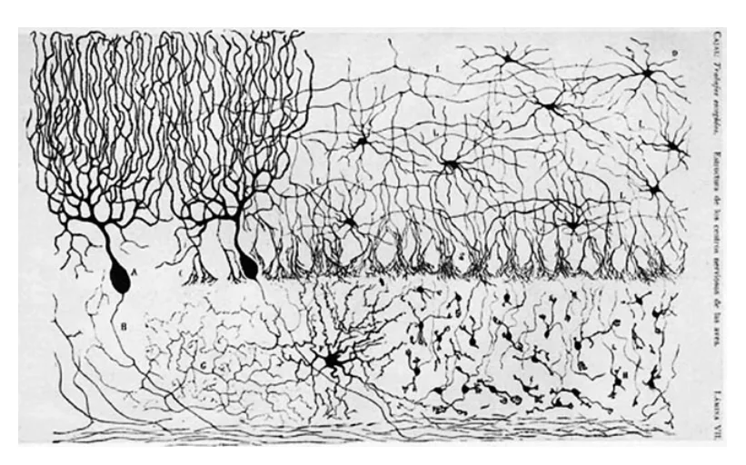
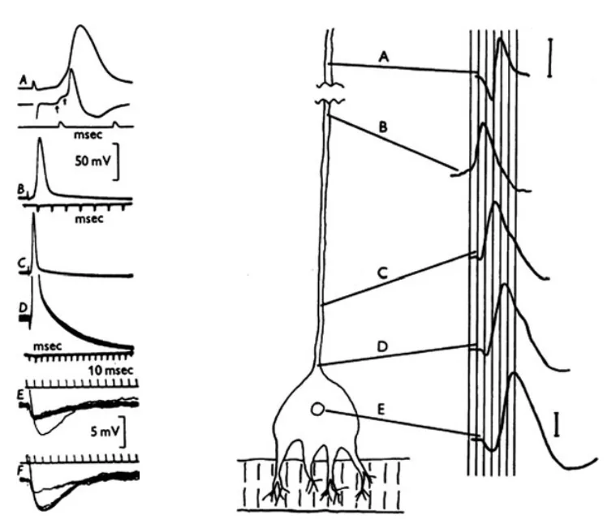
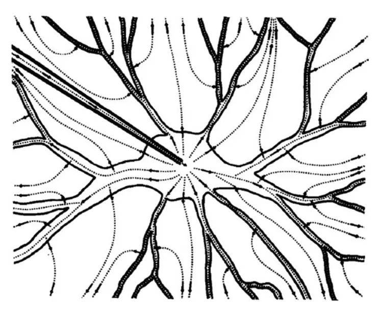

Chương 8 — Tổ chức chức năng của nơ-ron và nhánh cây
Chương 8
Tổ chức chức năng của Neuron và Sợi nhánh
‘‘Học thuyết neuron’’ ra đời như một nguyên lý tổ chức cho hệ thần kinh vào cuối thế kỷ XIX. Những tiến bộ trong thập niên 1950 đã cung cấp các kiểm chứng thỏa đáng đầu tiên về tính đúng đắn của nó, tạo nên, theo lời của Theodore Bullock, một ‘‘cuộc cách mạng thầm lặng nhưng sâu rộng’’ trong khái niệm chức năng của neuron, một cuộc cách mạng vẫn tiếp diễn cho đến ngày nay. Phần lớn cuộc cách mạng này liên quan đến ý nghĩa chức năng của các nhánh ngắn, tức các sợi nhánh, ở cấp độ tổ chức cao hơn tiếp theo của neuron phía trên synap. Các neuron được nhìn nhận là chứa đựng ‘‘sự phức tạp trong tính thống nhất’’. Một khái niệm mới về tổ chức chức năng của neuron động vật có xương sống đã xuất hiện: Các điện thế synap kích thích và ức chế kết hợp lại để lan truyền đến đoạn khởi đầu của sợi trục nhằm kích hoạt điện thế hoạt động, sau đó lan truyền ngược trở lại vào thân tế bào và các sợi nhánh. Wilfrid Rall đã kế thừa công trình của Hodgkin và Huxley để chứng minh sự thống trị của các sợi nhánh trong hoạt động tích hợp này. Những nghiên cứu đầu tiên về các đặc tính sinh lý của sợi nhánh và gai sợi nhánh đã được thực hiện. Khái niệm mở rộng về tổ chức chức năng của neuron đang được mở rộng mạnh mẽ bởi các công trình hiện đại. Tuy nhiên, việc đánh giá đầy đủ tầm quan trọng của các sợi nhánh trong hoạt động tích hợp của neuron vẫn tiếp tục là một trong những biên giới cuối cùng của khoa học thần kinh hiện đại.
Học thuyết tế bào được đưa ra cho thực vật bởi Matthias Schleiden vào năm 1838 và cho động vật bởi Theodor Schwann vào năm 1839. Một loạt các nghiên cứu kính hiển vi trong thập niên 1840 đã xác lập tế bào là đơn vị tổ chức cơ bản được bao bọc bởi màng của hầu hết các mô và cơ quan trong cơ thể, nhưng sự chấp nhận trong hệ thần kinh bị trì hoãn do khó khăn trong việc quan sát dưới kính hiển vi quang học xem các nhánh của các tua bào tương kết thúc như thế nào (xem tổng quan trong Shepherd, 1991).
Phương pháp nhuộm tẩm bạc do Camillo Golgi phát hiện năm 1873 cuối cùng đã cho phép quan sát từng tế bào riêng lẻ trong hệ thần kinh trung ương. Với phương pháp này, Golgi đã xác lập nhiều phát hiện đầu tiên. Ông thấy rằng các sợi nhánh phân nhánh kết thúc tự do, điều này bác bỏ các giả thuyết trước đó về mạng lưới liên quan đến sợi nhánh. Ông sử dụng các kiểu phân nhánh sợi nhánh khác nhau làm cơ sở để phân loại các loại tế bào thần kinh khác nhau. Ông mở rộng quan sát của Deiters về một sợi trục duy nhất xuất phát từ neuron vận động để chứng minh rằng điều này cũng đúng với các neuron trung ương trong não. Ông phân loại các tế bào dựa trên sợi trục của chúng thành tế bào sợi trục dài (chiếu ra khỏi một vùng đến các vùng khác) và tế bào sợi trục ngắn (về sau được công nhận là các neuron trung gian). Ông chỉ ra rằng sợi trục có các nhánh mở rộng, gọi là ‘‘nhánh bên sợi trục’’, phát hiện mà ông tự hào nhất. Trong tất cả các phát hiện này, Golgi là người tiên phong; tất cả những người đi sau đều xây dựng trên nền tảng của ông, một thực tế có lẽ chưa được công nhận đầy đủ vào thời điểm đó và chắc chắn là cả trong thời đại của chúng ta.
Vượt ra ngoài những phát hiện cơ bản này, vốn được Ramón y Cajal và các nhà mô học sau này xác nhận, Golgi đã có một quan sát sâu hơn và một diễn giải mang tính định mệnh. Trong các tiêu bản nhuộm của mình, ông thấy dường như các nhánh bên sợi trục mảnh nhất hòa vào nhau thành một mạng lưới liên tục. Diễn giải của ông là những nhánh bên phân nhánh rộng rãi này, và chỉ riêng các nhánh bên, tạo thành một mạng lưới (reticulum), thực hiện các chức năng truyền tín hiệu cơ bản của hệ thần kinh.
Kỹ thuật Golgi phần lớn bị bỏ qua trong hơn một thập kỷ cho đến khi được một nhà mô học vô danh ở Tây Ban Nha, Santiago Ramón y Cajal, phát hiện ra. Câu chuyện đã được kể nhiều lần, sống động nhất là trong chính hồi ký của Ramón y Cajal (Ramón y Cajal, 1937; Shepherd, 1991). Trong những nghiên cứu đầu tiên vào cuối thập niên 1880, Ramón y Cajal đã xác nhận các phát hiện của Golgi rằng các sợi nhánh kết thúc tự do, rằng các kiểu phân nhánh khác nhau của chúng là cơ sở của các loại tế bào thần kinh khác nhau, rằng sợi trục thường chỉ có một, và đặc trưng của nó là tách ra các nhánh bên theo những kiểu phân nhánh khác nhau. Tuy nhiên, ông cũng tìm thấy bằng chứng thuyết phục rằng các nhánh bên sợi trục cũng kết thúc tự do. Điều này hàm ý rằng các nhánh bên không tạo thành mạng lưới liên tục mà đúng hơn là sự giao tiếp giữa các tế bào thần kinh diễn ra thông qua tiếp xúc chứ không phải sự liên tục.
Những phát hiện và diễn giải của Ramón y Cajal được hầu hết các nhà mô học cổ điển khác áp dụng phương pháp Golgi ủng hộ. Riêng Ramón y Cajal đã làm việc cật lực, cho ra đời hàng loạt bài báo về các tế bào khác nhau khắp hệ thần kinh trong thập niên 1890. Sự đồng thuận nổi lên từ các công trình ban đầu đã được Wilhelm Waldeyer ở Đức tổng kết vào năm 1891 (xem bản dịch trong Shepherd, 1891, 183):
. . . tất cả những tác giả không chấp nhận sự hình thành mạng lưới của các sợi thần kinh bên trong cơ quan trung ương (Ramón y Cajal, Kölliker, His, Nansen, Lenhossék, Retzius) có thể dễ dàng hợp nhất các điểm I và II trên đây thành một quy luật cơ bản ngắn gọn chung có phạm vi rộng hơn. Nó sẽ phát biểu như sau:
Hệ thần kinh bao gồm vô số đơn vị thần kinh (neuron), độc lập về mặt giải phẫu và di truyền.
Điều này đã khai sinh ra ‘‘thuyết neuron’’, sớm được nâng tầm thành ‘‘học thuyết neuron’’. Như cách hiểu thông thường, nó khẳng định rằng mỗi tế bào thần kinh là một cá thể riêng biệt, được giới hạn bởi màng sinh chất giống như mọi tế bào khác trong cơ thể. Kết luận này phù hợp với cách diễn giải về mối quan hệ—bằng tiếp xúc chứ không phải liên tục—giữa các tế bào trong các mô và cơ quan khác khắp cơ thể. Chính vì lý do này mà học thuyết neuron được xem là sự mở rộng của học thuyết tế bào sang hệ thần kinh. Như chúng ta đã thấy, Sherrington đã đề xuất thuật ngữ ‘‘synap’’ cho các điểm tiếp xúc giữa các tế bào thần kinh (Chương 5).
Sự phân cực động của Neuron
Bên cạnh sự kiên định về tính cá thể của toàn bộ tế bào thần kinh và các tương tác của nó thông qua tiếp xúc, Ramón y Cajal (1911) còn có hai đóng góp khái niệm khác thiết yếu để hiểu ý nghĩa chức năng của neuron (tóm tắt trong Shepherd, 1991).
Đóng góp thứ nhất liên quan đến dòng thông tin đi qua tế bào thần kinh. Waldeyer đã để ngỏ câu hỏi này. Trong các công trình tiếp theo vào đầu thập niên 1890, Ramón y Cajal, cùng với Alfred van Gehuchten ở Bỉ, đã suy luận rằng có một hướng tổng thể của dòng hoạt động, từ các điểm tiếp xúc trên sợi nhánh và thân tế bào đi ra sợi trục và đến các tận cùng sợi trục (tóm tắt trong Shepherd, 1991). Ông gọi đây là ‘‘quy luật phân cực động’’. Điều này mang lại ý nghĩa chức năng cho tế bào thần kinh như một thực thể tích hợp, tiếp nhận các đầu vào từ các nguồn khác nhau và phân phối chúng đến các tế bào đích khác nhau (Hình 8.1).
Khái niệm thứ hai được xây dựng trên khái niệm thứ nhất. Bằng cách vận dụng trí tưởng tượng phi thường của mình vào việc diễn giải chức năng của các mối quan hệ giữa các tế bào được nhuộm, ông đã suy luận ra dòng thông tin không chỉ bên trong mỗi tế bào mà còn giữa các tế bào với nhau. Ông đã thiết kế các sơ đồ cho thấy những mối quan hệ này tạo thành các đường dẫn truyền trong một vùng như thế nào để thực hiện các chức năng đa neuron, tích hợp đầu vào từ các nguồn vùng khác nhau và phân phối chúng đến các vùng đích khác nhau. Điều này cho phép ông biểu diễn dòng hoạt động qua các tế bào của hành khứu, chẳng hạn, và so sánh nó với dòng hoạt động tương đương qua võng mạc. Cách tiếp cận này cung cấp bằng chứng thuyết phục rằng hệ thần kinh được cấu tạo từ các tế bào thần kinh liên kết với nhau tạo thành các mạch và đường dẫn truyền thực hiện các hoạt động chức năng của các vùng và hệ thống khác nhau.
Nhiều tác giả đã chứng thực tầm quan trọng của học thuyết neuron ban đầu và những khái niệm chức năng này đối với sự trỗi dậy của khoa học thần kinh hiện đại. Chẳng hạn, David Hubel đã nhận xét rằng cuốn giáo trình mô học hệ thần kinh của Ramón y Cajal (1911), đầy ắp bằng chứng về các tế bào thần kinh như những thực thể riêng biệt, ‘‘được coi là tác phẩm quan trọng nhất từng được xuất bản trong sinh học thần kinh’’ (Junquera, 1992, viii). Về mặt sinh lý học, Sherrington đã làm rõ tầm quan trọng trung tâm của việc mở rộng học thuyết tế bào sang hệ thần kinh. Trong tác phẩm vĩ đại của ông Hoạt động Tích hợp của Hệ Thần kinh (The Integrative Action of the Nervous System), xuất bản năm 1906 ngay sau cuốn Histologia bằng tiếng Tây Ban Nha của Ramón y Cajal, câu đầu tiên viết: ‘‘Không nơi nào trong sinh lý học mà học thuyết tế bào bộc lộ sự hiện diện của nó thường xuyên hơn trong chính khuôn khổ của lập luận như hiện nay trong nghiên cứu về các phản ứng thần kinh.’’
Với tập hợp các định đề được đơn giản hóa, học thuyết neuron do đó đã cung cấp nền tảng khái niệm cho sự trỗi dậy của khoa học thần kinh hiện đại trong việc tìm hiểu chức năng não bình thường và sự phát triển của các chuyên ngành thần kinh học lâm sàng trong việc tìm hiểu các bệnh lý thần kinh. Về mặt này, có thể nói nó đã cung cấp nguyên lý tổ chức cơ bản cho khoa học thần kinh tế bào hiện đại, đóng vai trò tương tự như nguyên tử đối với vật lý hiện đại, liên kết hóa học đối với hóa học, tế bào đối với sinh học tế bào, và gen đối với di truyền học cũng như sinh học phân tử.
Nghiên cứu hiện đại ban đầu xác nhận, sau đó thách thức Học thuyết Neuron cổ điển
Ấn phẩm cuối cùng của Ramón y Cajal, vào năm 1933, ngay trước khi ông qua đời, là một bài tổng quan toàn diện về các bằng chứng ủng hộ thuyết neuron chống lại thuyết mạng lưới. Chúng ta đã thấy rằng sự ra đời của các phương pháp sinh học tế bào hiện đại vào thập niên 1950, đặc biệt là kính hiển vi điện tử cho cấu trúc tinh vi của tế bào và vi điện cực ghi đo cho sinh lý học màng và tế bào, đã mang lại sự ủng hộ cho tính đúng đắn cơ bản của học thuyết cổ điển. Tuy nhiên, các synap điện đã đặt ra những câu hỏi về các loại tập hợp neuron được tạo ra bởi sự liên tục cho phép dòng điện và các phân tử nhỏ đi qua trong nhiều quần thể tế bào, những câu hỏi vẫn tiếp tục cho đến ngày nay.
Còn về khái niệm chức năng của neuron, ý tưởng cho rằng có một dòng hoạt động từ các sợi nhánh đến thân tế bào và đi ra sợi trục thì sao? Nếu chức năng của sợi trục là truyền xung thần kinh, thì chức năng của thân tế bào và các nhánh sợi nhánh phức tạp của nó là gì? Ramón y Cajal và các nhà mô học khác đã thiết lập học thuyết neuron không biết đến bất kỳ hoạt động nào khác của tế bào thần kinh ngoài xung thần kinh trong sợi trục, vì vậy họ cho rằng khi các sợi nhánh bị kích thích, chúng truyền xung qua các nhánh của mình về phía thân tế bào để đi ra sợi trục.
Tích hợp Synap và Khởi phát Điện thế Hoạt động
Việc phát hiện ra các điện thế synap đã buộc phải suy nghĩ lại về ý tưởng này bởi vì trong mô hình neuron vận động, với sự kích hoạt theo cấp độ của số lượng synap khác nhau trên màng thân-sợi nhánh, một sự chuyển đổi đã diễn ra giữa các điện thế synap được cộng gộp và đầu ra xung tất cả-hoặc-không. Sự chuyển đổi này diễn ra ở đâu bên trong neuron và như thế nào?
Câu hỏi này đã được giải quyết ở neuron vận động bởi Kay Frank và Michael Fuortes (Fuortes et al., 1957) (Phụ lục 8.1) tại Viện Y tế Quốc gia Hoa Kỳ (NIH). Trước tiên, họ khảo sát cách neuron vận động phản ứng với một điện thế hoạt động được tạo ra trong sợi trục và lan ngược (antidromic) vào thân tế bào. Họ phát hiện ra rằng gai lớn ghi được từ thân tế bào có một sự ngập ngừng ở pha đi lên, mà họ cho là do sự chậm trễ xảy ra trong khả năng khử cực của các dòng điện cục bộ của điện thế hoạt động khi chúng lan từ điện trở cao của sợi trục đường kính nhỏ sang điện trở thấp của diện tích rộng lớn của thân tế bào và tất cả các sợi nhánh xuất phát từ nó, một sự khác biệt về điện gọi là ‘‘sự bất tương hợp trở kháng’’ (impedance mismatch).
Eccles và phòng thí nghiệm của ông sớm tham gia vào công trình này, kế thừa minh chứng tiên phong của họ về điện thế sau synap kích thích và ức chế (EPSP và IPSP) (Chương 7). Điều bất ngờ là chuỗi gai tương tự này, từ sợi trục ngược về thân tế bào và sợi nhánh, cũng xảy ra khi tế bào được kích hoạt bởi kích thích synap ở các sợi nhánh. Khái niệm mới, như được Eccles tóm tắt trong chuyên khảo được đọc rộng rãi Sinh lý học của Neuron (The Physiology of the Neuron, 1957), là các EPSP và IPSP lan truyền qua màng thân-sợi nhánh thụ động để cộng gộp tại đoạn khởi đầu rất dễ bị kích thích nhằm khởi phát điện thế hoạt động, sau đó lan truyền xuống sợi trục và lan ngược trở lại vào thân tế bào rồi tiếp tục ngược vào các sợi nhánh. Do sự bất tương hợp về trở kháng điện (điện trở và điện dung kết hợp của màng) giữa đoạn khởi đầu nhỏ hơn và màng thân-sợi nhánh lớn hơn, gai ghi được từ thân tế bào cho thấy hai thành phần kế tiếp nhau giống như trong trường hợp lan ngược. Các thành phần gai này được gọi là ‘‘đoạn khởi đầu’’ (IS) theo sau bởi ‘‘thân-sợi nhánh’’ (IS-SD) (Eccles, 1957) (Hình 8.2) và được Fuortes và cộng sự (1957) gọi là ‘‘A’’ và ‘‘B’’.
Bằng chứng cho khái niệm mới này ở neuron vận động chỉ là gián tiếp; điều cần thiết là một tế bào cô lập nơi có thể ghi đo trực tiếp từ các phần khác nhau của neuron. Carlos Eyzaguirre, làm việc cùng Stephen Kuffler tại Woods Hole, đã đánh giá câu hỏi này ở thụ thể căng của tôm hùm đất (Eyzaguirre và Kuffler, 1955a, 1955b). Như chúng ta đã thấy (Chương 7), tế bào này đã được Alexandrowicz (1953) thu hút sự chú ý. Tế bào có thể dễ dàng quan sát dưới kính hiển vi. Nó được tổ chức với các đầu tận cùng sợi nhánh nhúng trong một sợi cơ sao cho khi cơ bị kéo căng, các đầu tận cùng bị khử cực, tạo ra cái gọi là ‘‘điện thế thụ thể’’. Điện thế này lan truyền qua các sợi nhánh vào thân tế bào để khởi phát một đầu ra điện thế hoạt động ở sợi trục. Eyzaguirre và Kuffler đã phân tích các đáp ứng của tế bào và chỉ ra cách lực căng được chuyển đổi thành điện thế thụ thể, từ đó tạo ra đầu ra xung mã hóa trung thực tốc độ tăng và mức độ kéo căng cơ (Phụ lục 8.2). Việc sử dụng một tế bào mô hình để chứng minh một nguyên lý sinh lý học theo cách tinh tế như vậy là dấu ấn riêng của Kuffler. Chúng ta sẽ gặp một ví dụ còn nổi tiếng hơn khi thảo luận về các trường tiếp nhận thị giác (Chương 9).
Điều này vẫn để lại câu hỏi chính xác nơi nào các điện thế hoạt động phát sinh từ điện thế thụ thể: ở các đầu tận cùng sợi nhánh, các sợi nhánh, thân tế bào, hay ở đâu? Charles Edwards và David Ottoson trong phòng thí nghiệm của Kuffler được giao dự án thăm dò bằng một điện cực ghi ngoại bào dọc theo tế bào để xác định nơi dòng điện đi vào xảy ra, điều sẽ báo hiệu nơi gai được khởi phát. Như Ottoson sau này kể lại với tôi, họ đã kỳ vọng nó sẽ nằm ở thân tế bào. Trước sự ngạc nhiên của họ và của Kuffler, vị trí đó hóa ra nằm cách thân tế bào vài trăm micron ra phía ngoài trên sợi trục, tương đương với đoạn khởi đầu của sợi trục (Edwards và Ottoson, 1958) (Hình 8.3). Do đó, sự khử cực của điện thế thụ thể lan truyền qua các sợi nhánh và thân tế bào rồi ra sợi trục để khởi phát điện thế hoạt động, điện thế này lan truyền tiếp xuống sợi trục nhưng cũng lan ngược trở lại vào thân tế bào và các sợi nhánh, tương tự như trình tự được chỉ ra bởi các thí nghiệm ở neuron vận động.
Mặc dù ít được biết đến hơn các nghiên cứu về neuron vận động, thụ thể căng là minh chứng tinh tế nhất cho một khái niệm mới về tổ chức tích hợp của neuron. Thay vì sự tiến triển đơn giản của các xung qua tế bào hướng về phía sợi trục, việc tiếp nhận và tích hợp các điện thế synap trong thân tế bào và các sợi nhánh có thể được xem là một bước tích hợp đầu tiên và tách biệt trước khi kích hoạt điện thế hoạt động ở đoạn khởi đầu của sợi trục. Có thể hình dung rằng rất nhiều hoạt động tích hợp có thể diễn ra dưới ngưỡng khởi phát đầu ra, có khả năng làm thay đổi khả năng đáp ứng của tế bào theo cách có thể dẫn đến các cơ chế cho học tập và trí nhớ. Ngoài ra, sự lan truyền ngược của điện thế hoạt động thông báo cho thân tế bào và các sợi nhánh biết liệu đã có đầu ra hay chưa, qua đó ảnh hưởng thêm đến khả năng đáp ứng trong tương lai.
Trình tự này đã trở thành khái niệm cổ điển về tổ chức tích hợp của neuron đối với việc khởi phát điện thế hoạt động ở một neuron, chẳng hạn như neuron vận động, với các sợi nhánh thụ động. Nó đã được xác nhận bởi các nghiên cứu trong thập niên 1990 trong đó các điện cực kép có thể được đặt trên cả thân tế bào và các sợi nhánh (Stuart và Sakmann, 1994).
Các đặc tính chủ động của Sợi nhánh
Những đặc tính này chỉ ra rằng quy luật phân cực động của neuron của Ramón y Cajal cần phải được sửa đổi. Cũng có bằng chứng ủng hộ điều đó. Phần lớn bằng chứng này không đến từ việc ghi đo nội bào từ một neuron đơn lẻ mà từ việc ghi đo ngoại bào. Trong giai đoạn này, người ta bắt đầu có thể phát một cú sốc điện đơn lẻ vào một phần của não và ghi lại các đáp ứng bằng một vi pipet ngoại bào. Những bản ghi này thường có hai dạng. Một là một gai nhỏ biểu thị điện thế hoạt động ở một tế bào đơn lẻ gần đó. Vì việc nhận dạng không chắc chắn, những bản ghi này thường được gọi là ‘‘ghi đo đơn vị đơn lẻ’’ (single-unit recordings). Dạng kia là chuỗi các sóng điện thế xung quanh một quần thể tế bào được kích hoạt do tổng các dòng điện chạy quanh chúng. Bằng chứng không mang tính quyết định như từ các bản ghi nội bào, nhưng các bản ghi ngoại bào dễ thu được hơn nhiều.
Một số nhóm đã nghiên cứu các đặc tính chủ động của sợi nhánh. Theo hướng tiếp cận thứ nhất, Paul Fatt đã tiến hành ghi đo các điện thế gai đơn lẻ xung quanh các neuron vận động và thu được bằng chứng về sự xâm nhập xung chủ động vào các sợi nhánh (Fatt, 1957a, 1957b). Theo hướng tiếp cận thứ hai, H.-T. Chang tại Yale cùng George Bishop và Margaret Clare tại St. Louis đã thu được bằng chứng ở các sợi nhánh vỏ não về ‘‘dẫn truyền suy giảm’’ (decremental conduction), tức là các quá trình chủ động yếu trong sợi nhánh bị suy yếu dần theo khoảng cách từ một vị trí kích thích điện cục bộ. Chúng ta sẽ quay lại các nghiên cứu của Chang ở phần sau của mục này.
Bằng chứng thuyết phục nhất được một nghiên cứu sinh, Per Andersen, làm việc tại Oslo, Na Uy, thu thập. Ông đã ghi lại các điện thế trường ngoại bào cộng gộp được tạo ra xung quanh các neuron được kích hoạt ở hồi hải mã.
Các bản ghi này cho thấy một sóng nhọn được cho là do các điện thế hoạt động khởi phát ở các sợi nhánh đỉnh xa của các tế bào tháp bởi các synap kích thích; sóng này lan truyền thuận chiều, qua các sợi nhánh về phía thân tế bào và ra sợi trục (Andersen, 1959) (Phụ lục 8.3). Nghiên cứu này là một trong những công trình đầu tiên đưa hồi hải mã thành một hệ thống mô hình để phân tích tổ chức chức năng của các vùng não. Sóng nhọn được kích hoạt qua synap, gọi là ‘‘gai quần thể’’ (population spike), đã trở thành một công cụ giá trị cho mục đích này, dẫn đến việc sử dụng hồi hải mã như một lát cắt mô để nghiên cứu mạch ba synap (Skrede và Westgaard, 1971) và trong nghiên cứu tiếp theo về tăng cường dài hạn (long-term potentiation) như một cơ chế ứng cử viên cho cơ sở synap của học tập và trí nhớ kiểu Hebb; xem Chương 12. Sự lan truyền thuận chiều trong các sợi nhánh cuối cùng đã được chứng minh rõ ràng bằng phương pháp điện cực kẹp màng kép ở các tế bào mũ (mitral cells) khứu giác (Chen et al., 1997).
Báo cáo đầu tiên về các đặc tính sợi nhánh chủ động sử dụng điện cực nội bào là của Eccles, Libet và Young (1958), những người đã ghi lại các gai nhỏ biểu thị ‘‘các điểm nóng’’ (hot spots) sợi nhánh ở các neuron vận động đang trải qua thoái hóa tiêu sắc tố sau khi cắt đứt sợi trục. Báo cáo đầu tiên ở các tế bào bình thường về ‘‘các tiền điện thế’’ (prepotentials) nhỏ biểu thị các ‘‘điểm nóng’’ chủ động tại các điểm phân nhánh sợi nhánh ở xa được suy luận từ các bản ghi nội bào từ thân tế bào của các tế bào tháp hồi hải mã trong một bài báo kinh điển của Alden Spencer và Eric Kandel vào năm 1961. Tất cả các nghiên cứu này đều được thực hiện trên động vật được gây mê.
Các nghiên cứu này cho thấy các sợi nhánh có khả năng tạo ra các đáp ứng chủ động giống xung đối với các đầu vào synap kích thích. Tuy nhiên, trong hầu hết các bản ghi ở những thập kỷ tiếp theo, các sợi nhánh dường như thiếu những đặc tính này và do đó được đánh giá là có màng thụ động, trái ngược với màng tạo điện thế hoạt động của sợi trục. Chỉ với sự ra đời của phương pháp điện cực kẹp màng (patch electrode) để ghi đo từ các neuron trung ương vào thập niên 1990, người ta mới bắt đầu chứng minh được rằng hầu hết các sợi nhánh đều biểu hiện các kênh ion phụ thuộc điện thế và khả năng tạo ra các đáp ứng chủ động của chúng phụ thuộc vào nhiều yếu tố, bao gồm hình học của cây phân nhánh sợi nhánh, mật độ các kênh phụ thuộc điện thế, và các loại kênh lân cận.
Sự thống trị của Sợi nhánh và Wilfrid Rall
Các nghiên cứu ban đầu về đặc tính sợi nhánh không thể tiến xa trong việc tìm hiểu mối quan hệ phức tạp giữa các đặc tính này nếu thiếu một nền tảng định lượng được xây dựng trên các đặc tính lý sinh của màng. Đây từng là cách tiếp cận của Hodgkin và Huxley khi xây dựng mô hình định lượng của họ về điện thế hoạt động trong sợi trục mực ống. Tuy nhiên, các kiểu phân nhánh phức tạp của cây sợi nhánh đã đặt ra một trở ngại nan giải cho việc mở rộng cách tiếp cận này sang sợi nhánh.
Wilfrid Rall. Giải pháp cho vấn đề này được đưa ra bởi Wilfrid Rall (Hình 8.4), một người Mỹ, sinh năm 1922, được đào tạo như một nhà vật lý tại Yale trong Thế chiến II
và khi tốt nghiệp đã chuyển đến Đại học Chicago để tham gia Dự án Manhattan, nơi chế tạo quả bom nguyên tử đầu tiên. Trong thời gian này ông gặp K. C. Cole, người đã phát hiện ra điện thế hoạt động trong sợi trục mực ống (Chương 6). Cole đang thiết lập chương trình sau đại học đầu tiên về lý sinh học, và Rall đã gia nhập với tư cách là một trong những sinh viên đầu tiên. Sau chiến tranh, Cole chuẩn bị trở lại Woods Hole để tiếp tục các thí nghiệm trên sợi trục mực ống (xem Chương 6) và mời Rall tham gia cùng mình.
Chicago từng là một trung tâm hàng đầu trong việc ứng dụng toán học vào sinh học, thông qua một trong những người tiên phong trong nỗ lực này, Nicholas Rashevsky. Điển hình cho cách tiếp cận này là các phương trình mô tả sự kích thích điện của thần kinh, nhưng như chúng ta đã thấy (Chương 6), chúng mang lại rất ít hiểu biết sâu sắc về bản thân các cơ chế sinh học. Ngành lý sinh học mới có mục tiêu hiểu cơ sở vật lý của chức năng sinh học nhưng quyết tâm rằng nó phải dựa trên sự kết hợp chặt chẽ hơn giữa thực nghiệm và lý thuyết. Vì vậy, tại Woods Hole, Rall đã học cách phẫu tích sợi trục mực ống và tham gia vào các thí nghiệm về điện thế hoạt động, cũng như hỗ trợ phát triển các phương pháp điện tử bao gồm phương pháp kẹp điện thế mới và phân tích các đáp ứng điện.
Sau khi hoàn thành các yêu cầu cho bằng thạc sĩ, Rall quyết định làm luận án tiến sĩ với Eccles ở New Zealand, được truyền cảm hứng từ lý thuyết điện về ức chế synap của Eccles (Rall, 2006). Ông đến đó vào năm 1949 và nhanh chóng tham gia vào một nghiên cứu chuyên sâu về các đáp ứng đồng bộ của một nhóm neuron vận động đối với sự kích hoạt đồng bộ các sợi cảm giác đi tới chúng. Điều này đòi hỏi phải phẫu tích cẩn thận các rễ tủy sống của mèo và những buổi ghi đo kéo dài các mối quan hệ đầu vào–đầu ra. Trong thời gian này, tin tức về sự ra đời của kỹ thuật ghi đo nội bào được đưa đến Dunedin, và Eccles lao vào các thí nghiệm dẫn đến bước đột phá của ông vào năm 1951–52, được mô tả ở Chương 7.
Tuy nhiên, Rall vẫn tiếp tục dự án độc lập của mình dưới sự hướng dẫn của Archibald McIntyre. Điều này dẫn đến một mô hình về các mối quan hệ đầu vào–đầu ra của một nhóm neuron vận động, giả định rằng hoặc nhiều synap được phân bố đều trên bề mặt các neuron vận động hoặc một số lượng nhỏ tập trung ở một vùng thuận lợi. Dù kết quả này phần nào chưa xác định rõ, nó đã khiến ông bắt đầu suy nghĩ về cách các điện thế synap có thể lan truyền trong một tế bào và dẫn ông đến nhận thức sâu sắc rằng trong một thân tế bào, điện thế sẽ lan truyền trên bề mặt của nó gần như tức thời. Ngược lại, có thể thấy rằng điện thế sẽ lan truyền chậm hơn và suy giảm dần qua cây sợi nhánh.
Sau một năm nghỉ phép nghiên cứu mà ông dành tại các phòng thí nghiệm của Katz ở London và Cuy Hunt ở Rockefeller, ông gia nhập nhóm lý sinh học dưới quyền Cole tại Trung tâm Nghiên cứu Y học Hải quân vào năm 1956. Tuy nhiên, sĩ quan điều hành mới tuyên bố rõ ràng rằng ‘‘Nghiên cứu cơ bản thì được, miễn là đừng quá cơ bản.’’ Điều này khác với truyền thống mà Hải quân đã xây dựng trong chiến tranh về việc hỗ trợ nghiên cứu cơ bản, và là truyền thống mà sau này họ sẽ quay trở lại; nhưng thế là đủ để kích thích một cuộc di cư ngay lập tức của cả nhóm. Rall chuyển qua bên kia Đại lộ Wisconsin đến Viện Y tế Quốc gia (NIH), nơi ông dành phần còn lại của sự nghiệp tại Nhánh Nghiên cứu Toán học, do Dewitt Stetten lập ra trong
Viện Quốc gia về Viêm khớp và Các bệnh Chuyển hóa để tiếp nhận các nhà lý thuyết nhập cư.
Năm 1957, Eccles và một số người khác đã công bố các bản ghi từ neuron vận động cho thấy các điện thế tạo ra bởi việc bơm dòng điện vào thân tế bào (tóm tắt trong Eccles, 1957). Các pha suy giảm của những đáp ứng này được diễn giải là tuân theo một hàm mũ đơn, như đúng với một mạch điện trở và tụ điện đơn giản đại diện cho màng thân tế bào. Từ phân tích trước đó của mình về các quá trình quá độ trong thân tế bào, Rall nhận ra rằng các quá trình quá độ được ghi lại chậm hơn dự kiến và hẳn phải do dòng điện chảy vào các sợi nhánh. Ông đã công bố một ghi chú ngắn trên tạp chí Science năm 1957 cho thấy các quá trình quá độ có thể được mô hình hóa tốt nhất bằng một thân tế bào gắn với một hình trụ dài đại diện cho cây sợi nhánh. Từ đó ra đời khái niệm ‘‘sự thống trị của sợi nhánh’’ trong hoạt động tích hợp của một neuron vận động. Vì hầu hết các neuron khác đều có cây sợi nhánh phức tạp, khái niệm này đã được khái quát hóa cho hầu hết các neuron.
Rall đã tiến hành một nghiên cứu chi tiết về các kiểu phân nhánh của sợi nhánh neuron vận động, cung cấp một cơ sở chặt chẽ để quy giản một cây phân nhánh thành một hình trụ duy nhất. Tuy nhiên, các bài báo đã bị từ chối đăng, với Eccles rõ ràng là một trong những người phản biện, với lập luận rằng quá trình quá độ suy giảm trong các bản ghi của Eccles là do một khía cạnh kỹ thuật của thiết bị đo (sau này được chứng minh là không liên quan; xem Jack và Redman, trong Segev et al., 1995). Sự từ chối này là một bước lùi không chỉ đối với Rall, ở giai đoạn quan trọng này trong sự nghiệp của ông, mà còn đối với lý sinh học về sợi nhánh, làm chậm sự chấp nhận nó hơn một thập kỷ. Nghiên cứu được công bố vào năm 1959 và 1960 trên tạp chí Experimental Neurology (Rall, 1959, 1960) (Hình 8.5). Công trình này còn đáng chú ý hơn ở chỗ chứng minh rằng nếu các nhánh liên tiếp trong một cây thỏa mãn tổng các đường kính lũy thừa 3/2, thì cây đó có thể được mô hình hóa như một ‘‘hình trụ tương đương’’. Điều này cung cấp một công cụ giá trị để tạo điều kiện thuận lợi cho việc phân tích điện sinh lý các đặc tính của sợi nhánh.
Những nghiên cứu này bao quát sự lan truyền ở trạng thái ổn định của dòng điện và điện thế qua cây sợi nhánh. Sự lan truyền quá độ, biến thiên theo thời gian quá phức tạp để biểu diễn bằng các phương trình giải tích, vì vậy Rall đã đưa vào các phương pháp số, bắt đầu bằng cách điều chỉnh một chương trình do một đồng nghiệp trong đơn vị là Mones Berman phát triển để mô tả sự lan truyền của các chất phóng xạ qua các khoang cơ thể. Mặc dù những kết quả này rơi vào giai đoạn tiếp theo trong lịch sử phát triển của khoa học thần kinh hiện đại, chúng tôi lưu ý rằng chúng được trình bày lần đầu tại một hội nghị ở Ojai, California, năm 1962 và xuất bản năm 1964 (in lại trong Segev et al., 1995). Bài báo tiên phong này lần đầu tiên chỉ ra một cách chặt chẽ cách dòng điện lan truyền trong cây sợi nhánh và cách các độ dẫn làm nền tảng cho điện thế synap tương tác với nhau theo kiểu phi tuyến (Phụ lục 8.4). Cách tiếp cận này được áp dụng cho neuron vận động trong một loạt bài báo năm 1967, cuối cùng đã khởi đầu cuộc cách mạng trong cả chức năng sợi nhánh lẫn khoa học thần kinh tính toán. Tuy nhiên, sự miễn cưỡng của nhiều nhà sinh lý học thần kinh, nhà giải phẫu học thần kinh và nhà khoa học thần kinh tính toán trong việc đưa các đặc tính của sợi nhánh vào việc tìm hiểu chức năng neuron và mạng lưới vẫn tiếp tục cho đến ngày nay (xem Chương 16).
Sự hồi sinh của Phương pháp nhuộm Golgi
Sau khi Ramón y Cajal qua đời năm 1934, có rất ít nghiên cứu về hình thái học neuron nói chung, hay hình thái học sợi nhánh nói riêng. Sự hồi sinh mối quan tâm đến hình thái cây sợi nhánh bắt đầu với các nghiên cứu lý sinh của Rall và các nghiên cứu giải phẫu của David Sholl, được tóm tắt trong chuyên khảo được đọc rộng rãi của ông Tổ chức của Vỏ Đại não (The Organization of the Cerebral Cortex, 1956). Tác phẩm này không chỉ tập trung trở lại vào các sợi nhánh và gai của chúng mà còn đưa ra các phương pháp thống kê để mô tả đặc trưng tính kết nối synap với cây sợi nhánh. Công trình của Sholl đã giúp kích thích các biến thể mới và nhanh hơn của phương pháp nhuộm Golgi, thu hút nhiều nhà nghiên cứu mới bước vào lĩnh vực hình thái học sợi nhánh.
Gai Sợi nhánh
Một số sợi nhánh, như ở neuron vận động, có bề mặt nhẵn; nhưng một số khác, như ở tế bào tháp trong vỏ đại não, được bao phủ bởi các mấu nhỏ gọi là ‘‘gai’’ (spines). Chúng đã được Ramón y Cajal và những người đương thời mô tả, nhưng có rất ít hiểu biết về chức năng của chúng. Các nghiên cứu sinh lý học đầu tiên dường như là của H.-T. Chang. Trong số tất cả các nhà khoa học trẻ đến Hoa Kỳ vì Thế chiến II, cuộc đào thoát của ông là một trong những cuộc đào thoát kịch tính nhất, như sau này ông đã kể lại (Chang, 1984).
Hsiang-Tung Chang (Trương Hương Đồng) sinh năm 1907 tại một ngôi làng nhỏ ở tỉnh Hà Bắc, miền bắc Trung Quốc. Hoàn cảnh của ông nghèo khó đến mức ông không thể bắt đầu học tiểu học cho đến năm 14 tuổi. Việc học hành đã đưa ông đến Đại học Quốc gia Bắc Kinh, nơi ông tốt nghiệp cử nhân tâm lý học năm 1933. Sau đó ông trở thành trợ lý cho Ging-Hsi Wang (Uông Kính Hi) tại Nam Kinh. Wang, viện trưởng Viện Tâm lý học, là một nhà nghiên cứu và người thầy xuất sắc, đã đào tạo Chang về nghiên cứu giải phẫu và điện sinh lý học, thiết kế thí nghiệm, và viết bài báo khoa học; bài báo đầu tiên của Chang là về phản xạ thính giác của nhím trên Tạp chí Sinh lý học Trung Quốc (Chinese Journal of Physiology). Vào thời điểm đó, Trung Quốc may mắn được đón tiếp các vị khách nước ngoài, chẳng hạn như Walter Cannon, nổi tiếng với epinephrine, những người là cầu nối sống còn với khoa học phương Tây và là nguồn cảm hứng cho các sinh viên trẻ khao khát sự nghiệp nghiên cứu. Trong số họ có một số người sau này đã tạo dấu ấn, bao gồm T. P. Feng (Phùng Đức Bồi), một trong những người đầu tiên ghi lại điện thế synap năm 1940 (Chương 7); S.-C. Shen (Thẩm Thục Chi), người được đào tạo với Joseph Needham tại Cambridge, Vương quốc Anh; và trong thế hệ trẻ hơn có Chang, người đã cộng tác với Gaddum về dược lý học thần kinh ở Vương quốc Anh, và con trai ông, Renji Chang, sau này là một nhà sinh lý học thần kinh hàng đầu ở Trung Quốc.
H.-T. Chang đang ở Nam Kinh khi quân Nhật tấn công năm 1937 và tiến hành cuộc thảm sát tàn bạo sau này được biết đến với tên gọi ‘‘Vụ thảm sát Nam Kinh’’. Chang đã kịp thoát ra trên chuyến tàu cuối cùng. Trong một thời gian, ông giúp đỡ các nỗ lực cứu trợ tuyệt vọng, bao gồm việc giải cứu thư viện và thiết bị của các viện hàn lâm Trung Quốc trước bước tiến của quân xâm lược, rồi tìm đường đến một vùng an toàn hơn của Trung Quốc, nơi ông được mời giảng dạy sinh lý học tại trường quân y gần Quý Dương. Khi ở đó, ông tìm thấy trong thư viện một bản cuốn Sinh lý học Hệ Thần kinh (Physiology of the Nervous System, 1938) của John Fulton. Fulton từng học dưới quyền Sherrington vào thập niên 1920; chính ông là người đã hỏi Sherrington về nguồn gốc của từ ‘‘synap’’ (Chương 5). Ông đã trở thành trưởng bộ môn sinh lý học năm 1930 tại Yale ở tuổi 30. Thông qua mối quan hệ với Sherrington và Harvey Cushing, sáng lập Tạp chí Sinh lý học Thần kinh (Journal of Neurophysiology) năm 1938 và viết cuốn Sinh lý học Hệ Thần kinh, cuốn giáo trình đầu tiên về hệ thần kinh, cũng vào năm 1938, Fulton là một trong những nhà sinh lý học thần kinh nổi tiếng nhất thế giới.
Được truyền cảm hứng từ cuốn sách, Chang nói với các đồng nghiệp rằng ông muốn làm việc với Fulton, và một người trong số họ đáp lại: ‘‘Nếu một người nghèo như anh mà đi được sang Mỹ, thì mặt trời sẽ mọc ở đằng tây.’’ Bị chạm tự ái, Chang quyết tâm làm bằng được điều đó và viết một bức thư đề địa chỉ đơn giản là ‘‘John Fulton, Đại học Yale, Hoa Kỳ’’, hỏi về khả năng được sang học tập tại phòng thí nghiệm của ông. Ba tháng sau, một bức điện tín gửi tới với ba chữ: ‘‘Yes letter follows’’ (Đồng ý, thư gửi theo sau). Một tháng sau bức thư đến, chấp nhận đơn xin làm nghiên cứu sinh thỉnh giảng về sinh lý học của ông, kèm chi phí sinh hoạt, nếu ông có thể đến được Hoa Kỳ.
Chang bán hết đồ đạc, xoay xở qua vô số thủ tục hành chính rườm rà, và cuối cùng sau 6 tháng cũng nhận được hộ chiếu, giấy xuất cảnh, và—với bức thư của Yale là giấy tờ duy nhất—thị thực vào Hoa Kỳ. Con đường duy nhất ra khỏi Trung Quốc thời chiến là bằng máy bay vận tải quân sự từ Trùng Khánh đến Calcutta, chuyến bay mà ông lên vào ngày đầu năm mới 1943. Hầu hết du khách đều bị mắc kẹt tại thành phố này, nhưng Chang đã tìm được những người bạn học cũ, những người đã giúp ông đặt chỗ đầu tiên trên một ‘‘tàu tự do’’ (một tàu khu trục cũ của Mỹ) sắp rời bến đi Hoa Kỳ, dù sau đó ông lại chuyển sang một con tàu khác khởi hành từ Bombay. Ngay sau đó, con tàu đầu tiên đã bị quân Nhật đánh chìm, khiến gần như toàn bộ người trên tàu thiệt mạng. Con tàu của Chang chở quá tải trầm trọng nhưng vẫn xoay xở đi qua phía nam Australia, qua New Zealand vào nam Thái Bình Dương, và cập bến San Pedro, California 30 ngày sau đó. Ông đi xuyên qua Hoa Kỳ và vào ngày 24 tháng 3, bước vào sảnh tròn tại số 333 phố Cedar ở New Haven, tự giới thiệu mình với Giáo sư Fulton với tư cách là trợ lý mới của ông tại Yale!
Có thể lưu ý rằng cử chỉ này của Fulton hoàn toàn nhất quán với bản tính hào phóng và sức hút cá nhân của ông. Nhờ những phẩm chất này, ông đã thu hút một loạt giảng viên, sinh viên, nghiên cứu sinh sau tiến sĩ và học giả thỉnh giảng xuất sắc. Đó là một môi trường phong phú cho bất kỳ ai được đào tạo tại đó, đặc biệt là một người bắt đầu với quá ít ỏi và đã đi một chặng đường xa đến vậy.
Chang đắm mình vào môi trường mới, lao vào hàng loạt dự án, cả ở Yale lẫn với các đồng nghiệp thuộc mạng lưới rộng khắp quanh Fulton. Trong vòng 2 năm, ông đã lấy bằng tiến sĩ với một nghiên cứu về các đường dẫn truyền trung ương trong tủy sống, một công trình đồ sộ dài 300 trang được chuyển thành tám bài báo tạp chí. Sau đó ông hợp tác trong các dự án với Clinton Woolsey tại Johns Hopkins và David Lloyd tại Rockefeller, rồi quay lại Yale làm việc về các mạch dội ngược giữa đồi thị và vỏ não (xem Chương 10).
Ông sớm bị mê hoặc bởi các sợi nhánh trong vỏ đại não. Trong bài đóng góp của mình tại hội nghị lớn ở Cold Spring Harbor năm 1952 về sinh lý học mới của neuron, ông đã giải thích cách tiếp cận tiên phong của mình (Chang, 1952, 160):
Nghiên cứu của chúng tôi là một nỗ lực nhằm xác lập sự tồn tại của các điện thế sợi nhánh trong vỏ não đáp ứng với kích thích điện yếu và phân biệt các điện thế sợi nhánh với các điện thế đi kèm hoạt động của các neuron nội vỏ não. Chúng tôi muốn tìm hiểu về các đặc tính của sợi nhánh so với đặc tính của sợi trục. . . . Kết quả của chúng tôi [cho thấy] rằng (i) các sợi nhánh bị kích thích bởi kích thích điện, (ii) các sợi nhánh có khả năng dẫn truyền xung, và (iii) điện thế sợi nhánh khác với điện thế sợi trục ở chỗ nó không phải là một đáp ứng tất cả-hoặc-không. Người ta gợi ý rằng cường độ kích thích tạo ra các đáp ứng theo cấp độ.
Ông phân biệt giữa các tác động synap lên thân tế bào, vốn trực tiếp khởi phát một đáp ứng của tế bào, và các tác động lên sợi nhánh, mà ông gợi ý là trung gian cho ‘‘hoạt động thần kinh cấp cao, như ý thức, tri giác và tư duy’’. Các kết quả được công bố lần đầu năm 1951 và từ đó đến năm 1955 đã dẫn đến tám ấn phẩm nữa về điện thế sợi nhánh, một năng suất phi thường xét việc ông mới bắt đầu hành trình rời Trung Quốc chưa lâu.
Một trong những phát hiện hấp dẫn nhất của Chang liên quan đến các gai sợi nhánh, mà ông gọi là ‘‘chồi nhỏ’’ (gemmules). Ông thảo luận về sự phân bố của các chồi nhỏ trên các sợi nhánh đỉnh của tế bào tháp vỏ não và đưa ra các nhận xét sau:
Về mặt chức năng, các chồi nhỏ trên sợi nhánh tạo thành một rào cản cơ học ngăn không cho các cúc tận cùng synap tiếp cận trực tiếp thân chính của sợi nhánh, và do đó chúng đóng vai trò là một yếu tố giới hạn đối với sự kích thích synap. Chúng cũng làm chậm và làm suy giảm quá trình kích thích synap do điện trở thuần cao của các cuống cực kỳ mảnh của chồi nhỏ.
(Chang, 1952, 200)
Bài báo năm 1952 này được đọc rộng rãi (Phụ lục 8.5) và đã giúp kích thích sự hồi sinh mối quan tâm đối với các sợi nhánh, bao gồm các nghiên cứu của Margaret Clare và George Bishop vào đầu thập niên 1950. Nhận xét của Chang về tầm quan trọng của cuống mảnh của gai trong việc làm suy giảm đáp ứng lan từ đầu gai sang sợi nhánh mẹ đặc biệt mang tính tiên tri. Đó là bước đầu tiên hướng tới các phân tích chức năng tiếp theo về đặc tính của gai và đóng góp của chúng vào hoạt động tích hợp của sợi nhánh trong các công trình về tế bào hạt hành khứu, tế bào Purkinje tiểu não, và cuối cùng là tế bào tháp vỏ não.
Sự nghiệp sau đó của Chang cho thấy một góc nhìn về chính trị quốc tế trong thập niên 1950. Năm 1955, ông tham dự một hội nghị ở Scandinavia và đột ngột biến mất, trở về quê hương Trung Quốc. Dù bị cắt đứt với phương Tây, ông trở thành nhân vật trung tâm trong việc phát triển sinh lý học thần kinh tại Trung Quốc, tập trung vào sinh lý học của cơn đau. Việc này đòi hỏi một sự cân bằng cẩn trọng giữa việc đáp ứng công nghệ đang phát triển nhanh chóng của khoa học phương Tây, đồng thời dung hòa cả truyền thống châm cứu dân gian và y học Trung Quốc, cũng như sống sót qua Cách mạng Văn hóa. Ông đã tiếp đón rất hiếu khách khi tôi đến thăm ông ở Thượng Hải năm 1993, tại Viện Nghiên cứu Não Thượng Hải do ông sáng lập tại đó. Với nụ cười tinh nghịch, ông bảo tôi nhìn xuống dưới chiếc tủ trong phòng thí nghiệm thứ hai tính từ cuối hành lang ở Yale nơi ông đã khắc tên mình trước khi rời đi năm 1955. Tiếc là các phòng thí nghiệm đó đã được cải tạo từ lâu, nhưng suy cho cùng, ký ức về tên ông được khắc dưới chiếc tủ tại Yale mới là điều quan trọng nhất.
Suy nghĩ lại về Học thuyết Neuron
Tổng hợp các nghiên cứu trong thập niên 1950 về các tác động synap lên neuron cùng với bằng chứng mới về đặc tính của sợi nhánh, người ta bắt đầu thấy rõ rằng tế bào thần kinh không phải là đơn vị chức năng đơn giản như hình dung trong học thuyết neuron cổ điển. Xét việc Ramón y Cajal đưa ra mọi diễn giải của mình chỉ dựa trên mô học của neuron hơn nửa thế kỷ trước khi bất kỳ thí nghiệm nào có thể được thực hiện trên tế bào trong não, không có gì ngạc nhiên khi bằng chứng sinh lý học mang lại những hiểu biết mới. Theodore Bullock (1959, Phụ lục 8.6), khi tổng quan các nghiên cứu điện sinh lý học trên cả neuron trung ương động vật không xương sống và có xương sống trong thập niên 1950, đã lập luận rằng những kết quả này cho thấy thay vì hoạt động như một phần tử đơn lẻ, tế bào thần kinh có các đặc tính khác nhau ở sợi nhánh và sợi trục sao cho chức năng của nó được đặc trưng bởi ‘‘sự phức tạp trong tính thống nhất’’.
Xung thần kinh không phải là dạng hoạt động duy nhất của tế bào thần kinh; sự kích thích một phần của neuron không nhất thiết liên quan đến toàn bộ neuron; nhiều sợi nhánh có thể hoàn toàn không lan truyền xung; và synap không phải là nơi duy nhất diễn ra sự chọn lọc, đánh giá, mệt mỏi và thay đổi bền vững. Nhiều dạng hoạt động theo cấp độ—ví dụ như điện thế tạo nhịp, điện thế synap và điện thế cục bộ—mỗi dạng giới hạn trong một vùng khu trú hoặc các vùng lặp lại của neuron, có thể tích hợp riêng rẽ hoặc tuần tự các sự kiện đi tới, cùng với lịch sử và môi trường xung quanh, để quyết định đầu ra tại vùng giới hạn nơi các gai được khởi phát.
Trong một cụm từ nổi tiếng, ông mô tả đây là một ‘‘cuộc cách mạng thầm lặng nhưng sâu rộng’’ trong khái niệm của chúng ta về neuron. Bằng chứng tiếp tục nối dài với các phát hiện về synap trục–trục (Dudel và Kuffler, 1960) và synap nhánh–nhánh (Rall et al., 1966). Điều này cuối cùng dẫn đến những đề xuất thay thế các khái niệm chức năng của học thuyết neuron, trong đó neuron là đơn vị chức năng duy nhất, bằng một khái niệm về các đơn vị chức năng ở các cấp độ tổ chức khác nhau. Chúng có thể xảy ra bên trong một neuron nhất định và bên trong các tương tác đa neuron tạo thành các mạch và đường dẫn truyền của hệ thần kinh (Shepherd, 1972, 1991). Chính khái niệm về các cấp độ phân cấp này đã được sử dụng để tổ chức tài liệu trong cuốn sách này. Nỗ lực kết hợp học thuyết neuron cổ điển vào các khái niệm mới về các đơn vị chức năng đa cấp độ, đa neuron vẫn tiếp tục cho đến hiện tại (Bullock et al., 2005; Byrne và Shepherd, 2008).


